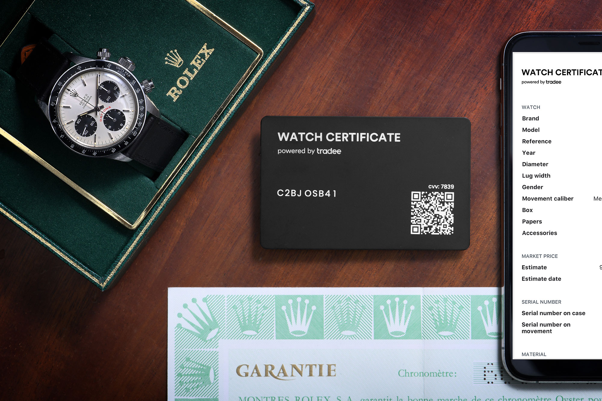

Binishaan Basnet on 1/13/2025
As the expensive watch industry starts to grow, the problem of counterfeit watches has also started to grow with it. It is a challenge to ensure the authenticity of high-end watches. In order to tackle this challenge blockchain technology has emerged as a great solution.
Blockchain is a digital ledger, decentralized and distributed over a network, structured as a chain of registers responsible for storing data. Each so called “block” in the chain contains a record of transaction once it is recorded it cannot be altered. This technology helps ensuring the authenticity of watches.
Authenticity is everything in luxury watch industry, blockchain provides an easy solution to tackle the problem of fake watches. By implementing blockchain into the manufacture and sales process, watch brands can issue a unique digital certificate for each watch produced.Once the watch is sold, the digital certificate is linked to the buyer’s information, creating a verifiable history of the timepiece's ownership. If the watch is resold or transferred, the new owner can update the certificate
Blockchain technology is providing a new interface for security and transparency in the watch market. With the help of blockchain every watch manufactured and sold by a company can be tracked with all of its information in detail from the point of production to sale ensuring complete authenticity. As blockchain adoption continues to grow, we can envision a future where traditional watches are valued not only for their craftsmanship but also for the consciousness of their authenticity.
{kind=link}